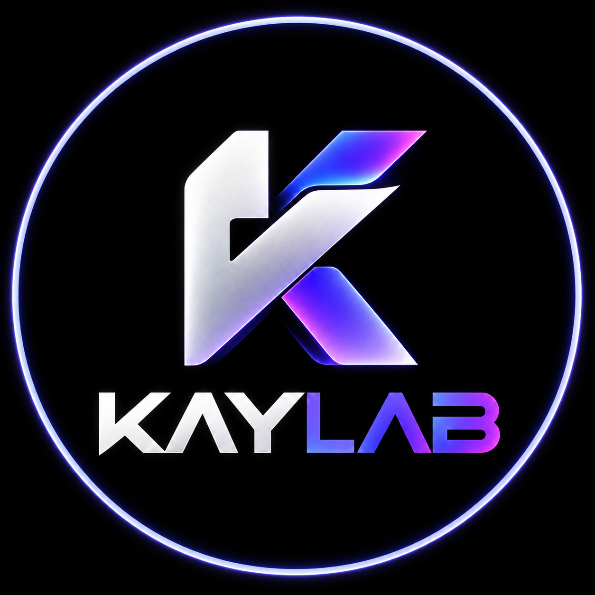
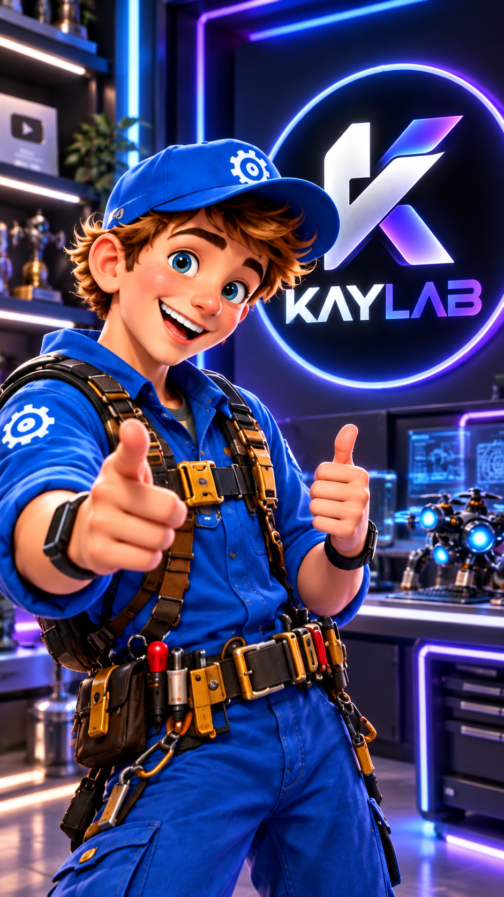
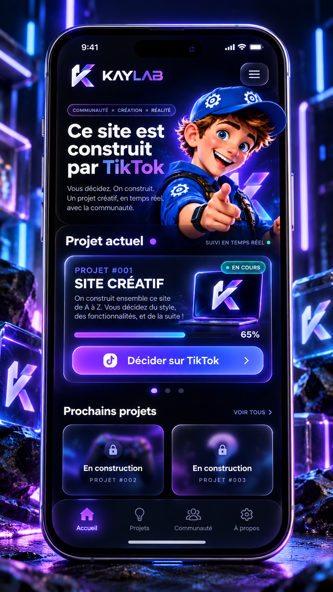
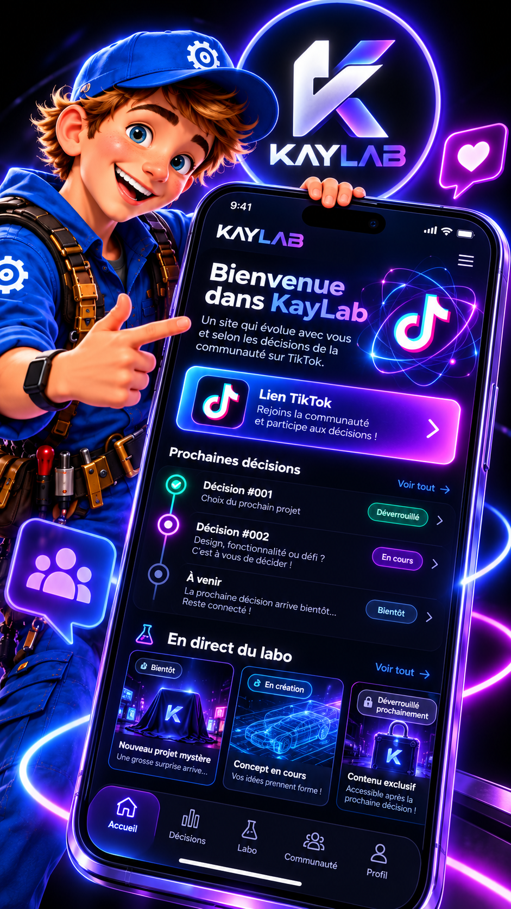
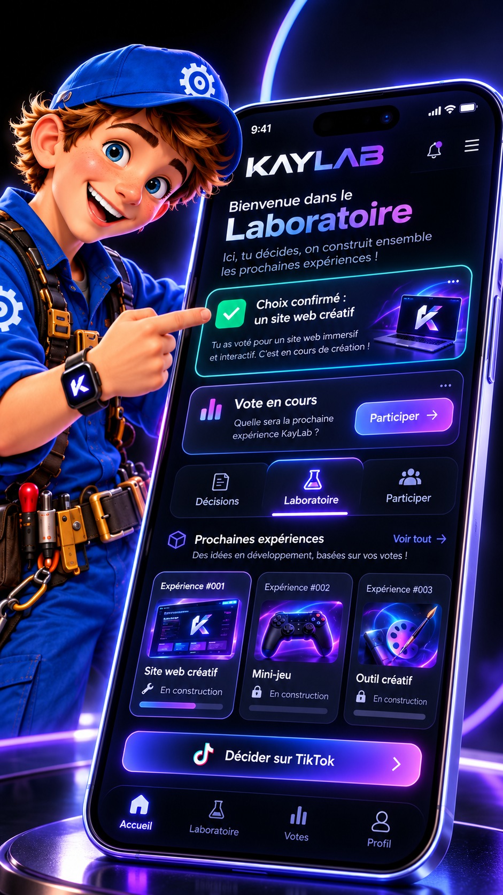

Quel type de projet ?
Résultat : un site web.

KAYLABKayLab transforme des idées en projets réels. La communauté choisit la direction, nous construisons la suite — étape par étape.

Un mini-site créatif, mobile-first, qui évolue selon les décisions de la communauté.
Les choix, fonctionnalités et prochaines pages seront décidés via TikTok et Instagram.

Résultat : un site web.
La communauté influence maintenant le style et les fonctionnalités.
Débloquée après le prochain vote.

Construire KayLab en public.

La communauté décidera ce qui arrive ici.
Bientôt débloqué.
Le site évolue avec les réseaux.
TikTok pour les décisions rapides. Instagram pour les coulisses, visuels et avancées.